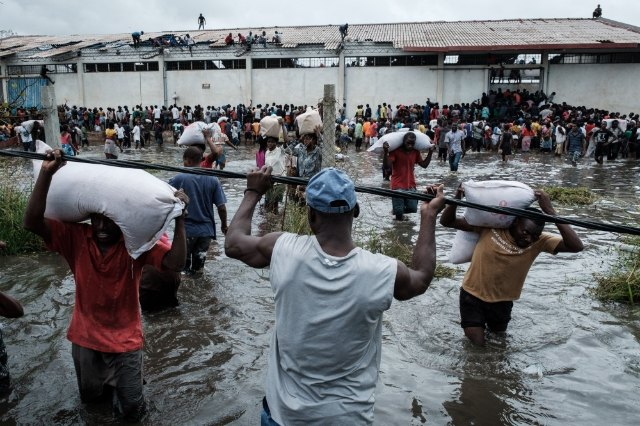

Africa for Mozambique is a task force commissioned by Global Pan Africanism Network in collaboration with Association of University Students of the University of Eduardo Mondlane (AEU-UEM), in rapid response to the devastation caused by Cyclone Ida in Mozambique.
The nature of the collaboration sees Africa for Mozambique sourcing and forwarding relief aid and expertise from the various regions where it is operational, and handing over the raised relief aid to AEU-UEM., which is on the ground in Mozambique, for delivery and implementation in disaster areas. Since the disaster, AEU-UEM has been able to deliver 14 tonnes of relief aid.
Critical Aid Items Needed
- Hygiene Materials
- Medications
- Clothing
- Food
- Money (Logistics)
How to help
Donate directly to AEU-UEMAEU-UEM purchases items in Maputo, Mozambique which remains unaffected by the cyclone and ships aid items from Port of Maputo to Beira
Donate via PayPal
Bank Name: Barclays Bank (Mozambique)
Account Holder: AEU-UEM
Account Number: 0038102006495
Entity Number: 99908
Reference: 0060397639
East London
Trinity Methodist Church, Oxford Street
Contact Person: Awonke - 066 044 2307 (Whatsapp too)
Umtata
04 Craister Street, Imizi Court, Town
Contact Person: Babalwa - 066 220 6294 & 0762875428
Organisations and individuals that have collected big quantities may request a pickup from the contact persons above.
Forwarding Address:
Number: 34533, Av. Julius Nyerere
Caixa Postal 257
Mrs. Hortencia Franco
UAE-UEM
+258 84 736 4199
hortenciafranco2@gmail.com
Contact Information
24 Palm Grove, Gonubie,
East London, South Africa
+27 660 442 307
July 25th Place C.P 257
africaformozambique@gmail.com
+258842715106
Mrs Nosisa Ndudula, handing over Africa for Mozambique 21 bags of clothes and shoes. (East London)
Awonke Mbete (Organisation Development) & Nelisa Ndayi (Public Relation) on the campaign trail at Kumkani Community Radio Station
Mlibo Qoboshiyane (Deputy Speaker at EC Legislature) speaking at Africa for Mozambique Prayer
Poster for Africa for Mozambique Prayer
Mama Sizane of NU3 Mdantsane was the first person in East London to donate to our cause
Nelisa Ndayi (Public Relations) speaking at Africa for Mozambique Prayer